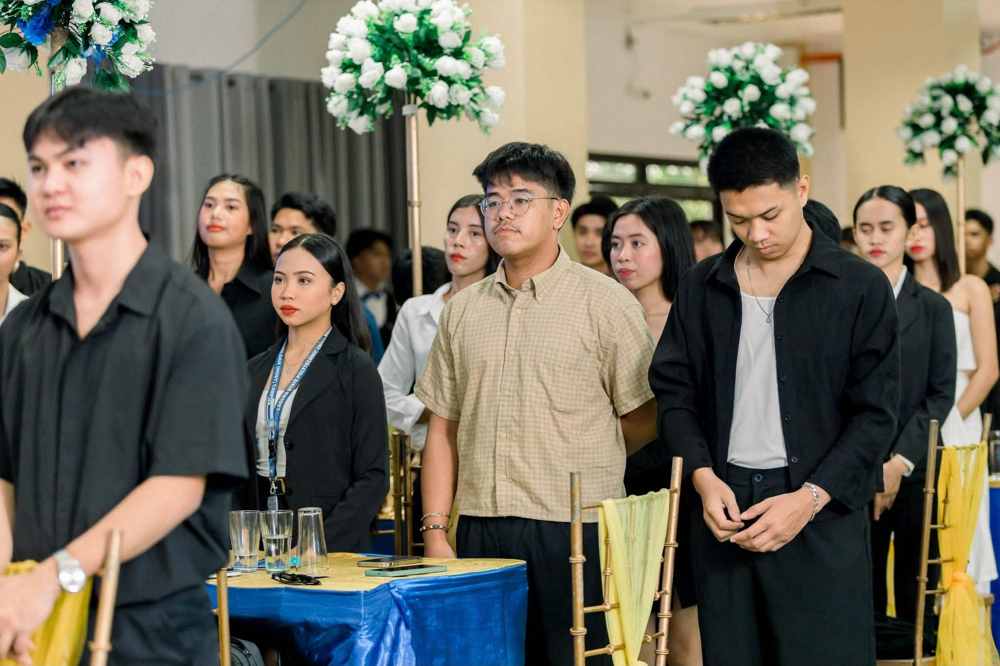

Discover the story ↻
01 / 10
Research Congress Participant
My first research congress experience was an opportunity to learn from guest speakers, gain valuable insights into the research process, and understand the importance of presenting research. This experience inspired me to take the next step and participate as a research presenter in the following congress.
Flip to return ↻